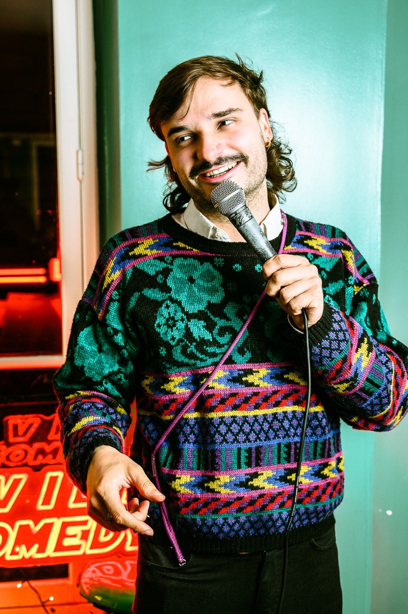
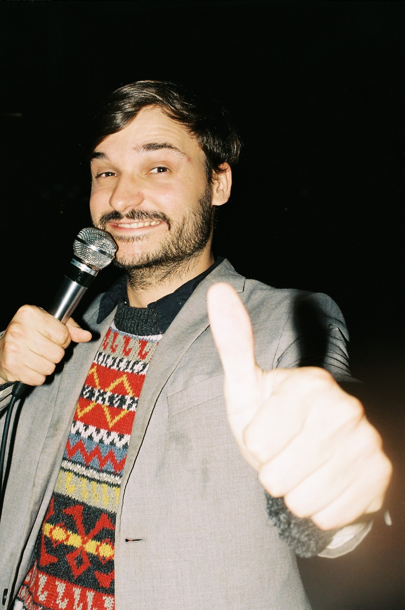
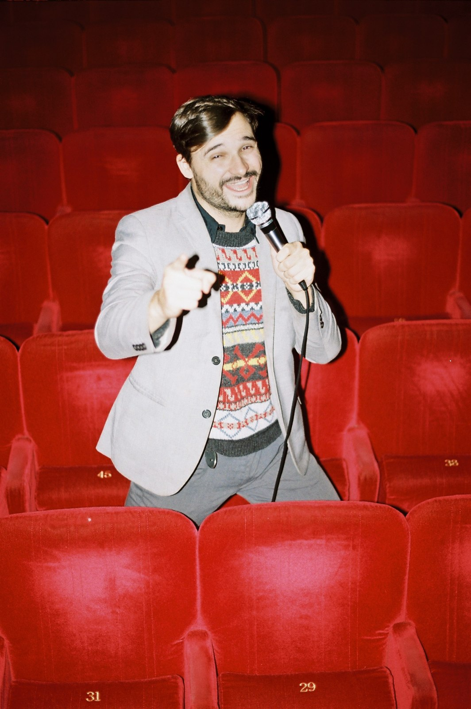

Pourquoi le roast ne marche pas en France
Une prise de parole sur le roast et l’humour.
Écouter sur France Culture →Tout ce qu'il faut pour écrire sur Paul ou l'annoncer dans un programme : bios prêtes à copier, photos et articles.
Pauk, de son vrai nom Paul Brunstein-Compard, est humoriste, comédien et improvisateur. MC du Poulet Comedy Club, il mêle stand-up et chansons improvisées. Professeur de stand-up au Cours Florent depuis 2023, il est responsable du département stand-up depuis 2025. Il enseigne aussi l'improvisation musicale à la FMR Académie et accompagne de jeunes humoristes en cours particuliers.
Paul Brunstein-Compard, alias Pauk, est humoriste et improvisateur basé à Paris. Depuis sept ans, il développe un univers qui mêle stand-up, jeu et musique, avec une attention particulière à la relation avec le public.
Il crée en 2022 son seul-en-scène musical, L'Art de rater, mis en scène par Arthur Fournier et joué pendant deux ans et demi à Paris. Il en tire un court métrage du même nom, présenté au cinéma Le Brady. On l'a vu sur Comédie+.
Il développe actuellement son deuxième spectacle, Merci pour votre attention (titre provisoire), autour de l’attention, du besoin de plaire et de la rencontre. Comédien, il a joué dans Méchant.e et FMR Académie : Le Prime, et a joué avec la FMR Académie au Festival d'Avignon 2026. Metteur en scène, il signe Bon Camarade d'Arthur Fournier au Théâtre Le Bout.
Professeur de stand-up au Cours Florent depuis 2023, il est responsable du département stand-up depuis 2025. Il enseigne aussi l'improvisation musicale à la FMR Académie. Il donne enfin des cours particuliers de stand-up pour aider de jeunes humoristes à se lancer et à développer leur carrière. Il est le MC du Poulet Comedy Club, à Pantin, dont il présente les plateaux.





Une prise de parole sur le roast et l’humour.
Écouter sur France Culture →L’interview de Pauk, à retrouver dans la publication relayée sur Instagram.
Voir la publication →Un passage tiré de son premier spectacle.
Retrouver l’émission sur Canal+ →« Pour qu'un “roast” fonctionne, il faut que ce soit méchant et drôle. » franceinfo, 3 juin 2026
Interrogé par franceinfo en tant que professeur de stand-up au Cours Florent, Paul décrypte le roast, cette pratique venue des États-Unis, à l'occasion de l'émission Dans la sauce sur Netflix.